How to use the SOP Portal
Use this guide to find SOPs, pin favorites, run checklists, complete training, suggest changes, and manage admin tools for SOP editing, sections, training reports, imports, users, branding, backups, and diagnostics.
1. Sign in
The login screen appears when staff portal login is enabled. Admin access always requires login.
- Open the portal link. Use the local or network address provided by your manager, administrator, or support provider.
- Enter your username. Use the account name assigned in Users / Logins. Usernames are usually lowercase.
- Enter your password. Passwords are case-sensitive. If you received a temporary password, sign in with it exactly as provided.
- Select Log in. A successful staff login opens the staff portal. Admin, Manager, and Editor users can open the Admin Portal after signing in.
- Use Login / Admin when staff login is off. If the staff portal is public, Admin Portal access still requires a login from the sidebar.
- Know public access mode. When staff login is off, Admins choose whether public staff portal visitors act as Staff or Viewer from Users / Logins.
- Request help when needed. If login fails or the account is locked, use Need portal support? and include the username and the page where the issue occurred.
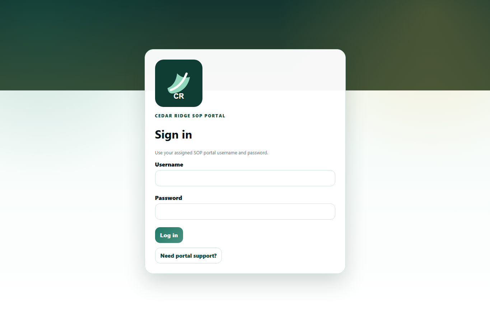
2. Find SOPs in the staff portal
The staff portal shows approved SOPs only. Drafts, pending reviews, rejected SOPs, and archived SOPs stay hidden from normal staff view.
- Browse by section. Section buttons in the sidebar group SOPs by workflow area and show the number of approved SOPs inside each section.
- Use My SOPs. This filters the list to SOPs assigned to one of your SOP assignment roles.
- Use Pinned SOPs. This shows SOPs you pinned for frequent work, recurring tasks, or quick reference.
- Search broadly. Search checks approved SOP titles, IDs, section names, roles, tags, and words inside SOP content and steps.
- Open mobile navigation when needed. On narrow screens, use Show Search and Sections to reveal search, section filters, My SOPs, and Pinned SOPs.
- Select an SOP. Click a result in the SOP list to open the full procedure on the right.
- Clear filters when needed. If an SOP is missing, switch back to All SOPs and clear the search box before assuming the SOP is unavailable.
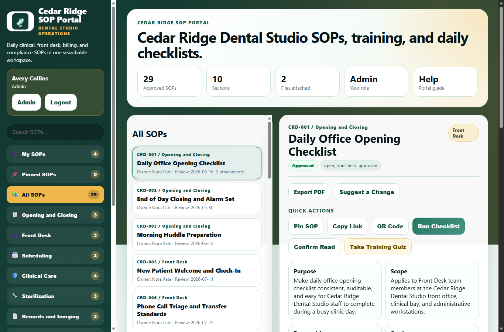
3. Read and use an SOP
Every SOP uses the same structure so staff can scan quickly and complete work consistently.
- Read the header fields first. Purpose explains why the SOP exists, Scope explains when it applies, and Prerequisites list what should be ready before starting.
- Follow the numbered Steps. Work through the steps in order unless Notes / Exceptions clearly explain a different path.
- Use Validation before closing the task. Validation describes what complete, correct, or ready-for-review work should look like.
- Check Notes / Exceptions. This area is where unusual cases, escalation rules, do-not-do items, or manager-review requirements should be listed.
- Use Export PDF when a copy is needed. Export PDF creates a printable or downloadable version of the selected SOP.
- Open Pictures and Files carefully. Attachments can include images, PDFs, Office files, CSV files, or text references that support the SOP.

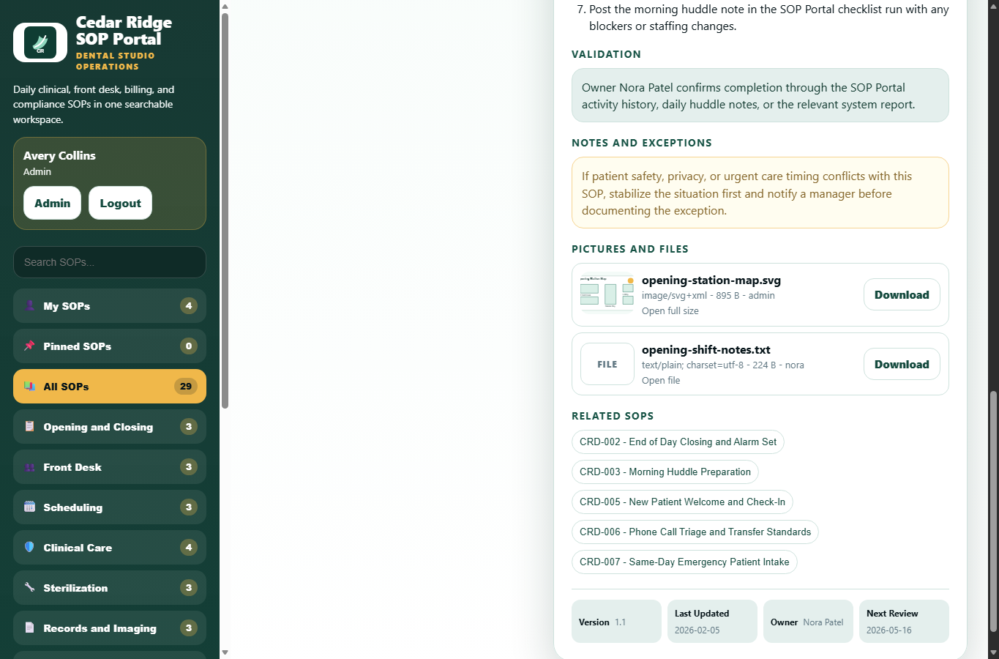
4. Pin, share, run, and train from an SOP
Quick actions appear inside the open SOP for common staff workflows.
- Pin the SOP. Select Pin SOP to add the current SOP to your Pinned SOPs list for faster access later.
- Copy a direct link. Select Copy Link when you need to paste a link into a message, ticket, task, or internal note.
- Use the QR Code button. Select QR Code to show a scannable link. QR codes use the Mobile / QR Base URL from Brand / Settings when it is configured.
- Run a checklist. Select Run Checklist to open a task instance based on the SOP steps, then check off steps as work is completed.
- Record read acknowledgement. Select Confirm Read when you reviewed the SOP and need to record that acknowledgement.
- Take a quiz when available. Select Take Training Quiz to answer saved multiple-choice questions for the SOP.
- Handle missing quizzes. If no quiz has been built yet, the quiz button stays visible and explains that an admin or manager can add questions from Training / Runs.
- Understand no-login tracking. If staff login is off, checklist and training completions use the typed staff name when one is entered, otherwise the record shows Public Staff.
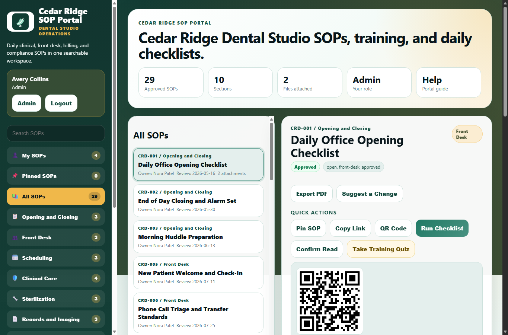
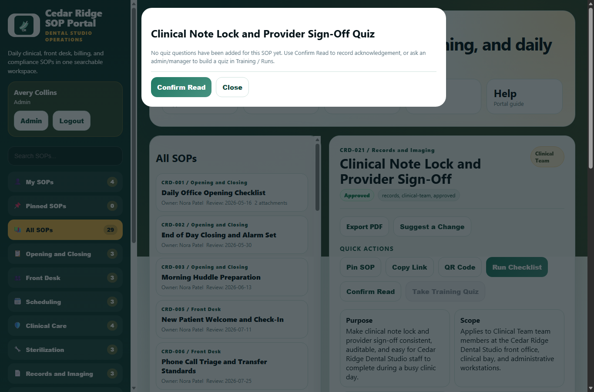
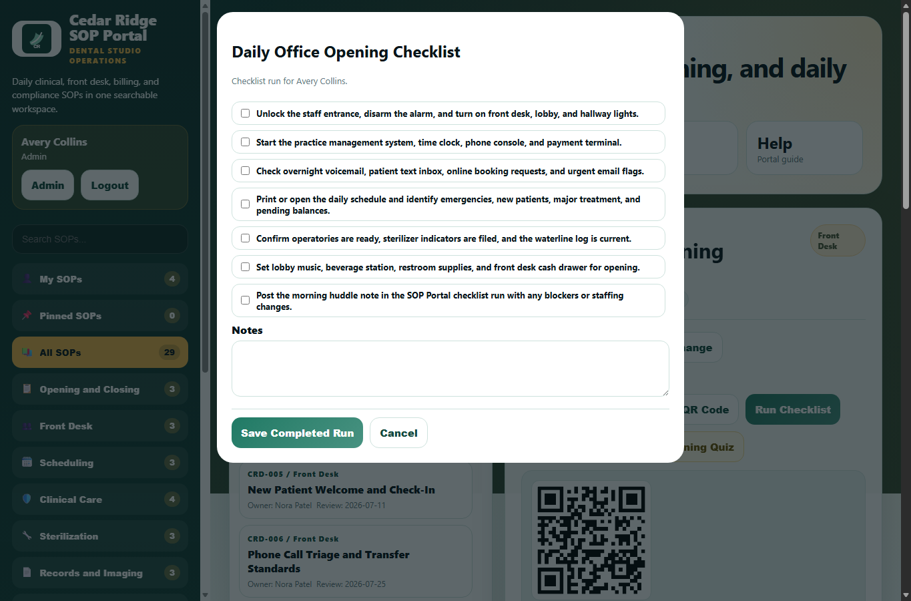
5. Suggest an SOP change
Suggest a change when an SOP is outdated, unclear, missing information, or needs better wording.
- Open the exact SOP. Start from the SOP that contains the outdated or unclear information so the request is tied to the right record.
- Select Suggest a Change. This opens a request form without editing the SOP directly.
- Confirm your name. Logged-in users are usually filled in automatically. If not, type the name staff should use for follow-up.
- Choose urgency. Use urgency to help managers triage the request. Add a step number when the issue applies to a specific step.
- Describe the issue clearly. Explain what is wrong, missing, outdated, confusing, or not matching current workflow.
- Add suggested wording when helpful. Suggested wording is optional, but it can speed up the manager review.
- Submit the request. The request appears under Change Requests in the Admin Portal for review.
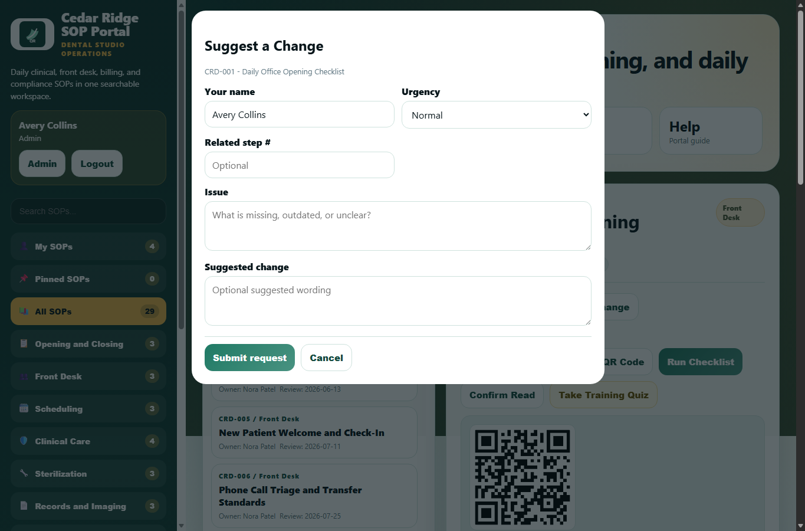
6. Request portal support
Use the support form for portal technical issues such as login trouble, PDF export problems, portal errors, upload issues, user/account questions, or requested portal changes.
- Open the support form. Use Request Support, Need portal support?, or the support link shown in the portal.
- Enter contact details. Add your name and email so support can follow up if more detail is needed.
- Choose urgency. Pick the urgency that best matches the impact to staff, customers, or portal administration.
- Identify the page or area. Mention the page, tab, button, or workflow where the issue happened.
- Describe what happened. Include what you clicked, what you expected, what happened, any error message, and who is affected.
- Submit the request. The request is stored locally in the Admin Portal under Support Requests.
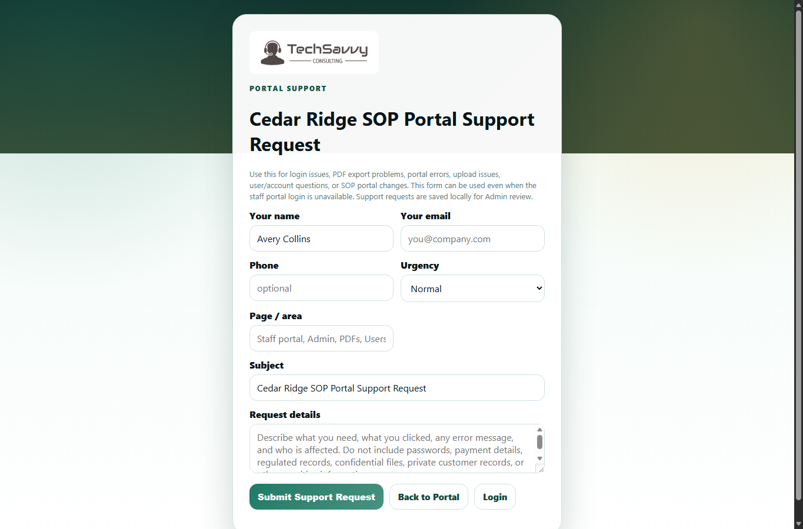
7. Use the admin dashboard
The dashboard gives Managers and Admins a quick health check of the portal.
- Open Admin Portal. Use the Admin Portal button after signing in with an account that has admin portal access.
- Review the summary boxes. Check SOP totals, approved count, pending reviews, drafts, overdue reviews, open change requests, staff login status, and user count.
- Use dashboard shortcuts. Select a dashboard box to jump to SOP Editor, Users / Logins, or a filtered Action Needed view.
- Review Action Needed. Use this list to find Draft, Pending Review, Rejected, overdue, due-soon SOPs, or open change requests.
- Resolve issues in the correct tab. Dashboard items are shortcuts; actual edits still happen in SOP Editor, Users / Logins, Change Requests, or the relevant admin tab.
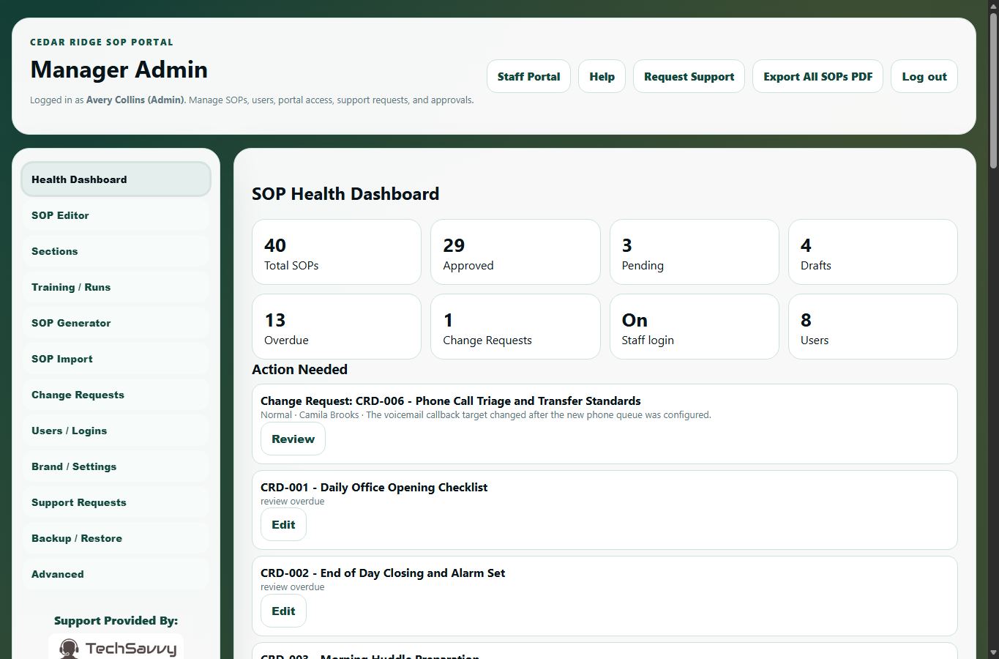
8. Edit SOPs
The SOP Editor is used to create, duplicate, edit, save, submit, approve, reject, archive, export, and roll back SOPs.
- Find the SOP. Use search, section filter, and status filter to narrow the left-side SOP list before editing.
- Select the SOP. Click the SOP in the list so its fields load into the editor form on the right.
- Edit normal fields first. Use the visible form fields for ID, Status, Section, Version, Title, Purpose, Scope, Prerequisites, Steps, Validation, Notes / Exceptions, Owner, SOP Assignment Roles, dates, Tags, and Version Summary.
- Assign roles for filtering. Use SOP Assignment Roles to control Staff Portal My SOPs filtering only. It does not block direct SOP, PDF, or attachment access for logged-in users.
- Enter one step per line. Each line in Steps becomes a numbered staff step and a checklist item.
- Review quiz status. The Training Quiz box shows whether the selected SOP has saved quiz questions.
- Build or edit quiz questions. Select Build Quiz or Edit Quiz from the Training Quiz box to open Training / Runs for that SOP.
- Choose the workflow action. Use Save, Submit for Review, Approve, Reject, Archive, or Save All Changes based on the SOP state.
- Know what Save does. Save and Submit for Review save current form values first, including Section, before creating or submitting a draft.
- Handle save conflicts. If another admin changes SOP data after your page loaded, the portal blocks your save and asks you to reload before saving again. Reload, review the live data, then reapply your edits if needed.
- Use Archive intentionally. Archived SOPs leave normal staff view but remain available in the admin SOP list when the status filter includes Archived.
- Attach supporting files. Use Pictures and Files to attach approved images, PDFs, Office files, CSV, or text files.
- Use version history. Save All Changes creates a Version History entry for every changed SOP, and Version History / Rollback can restore a previous version.
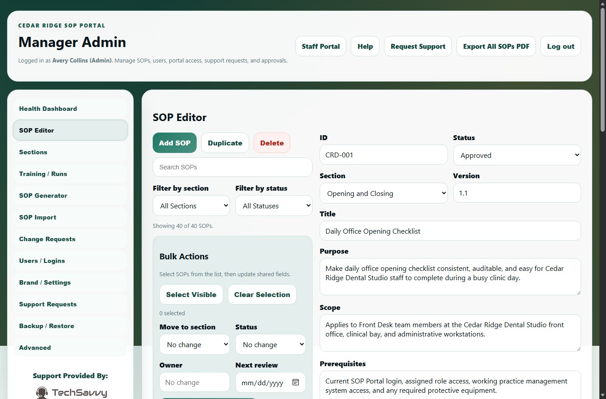
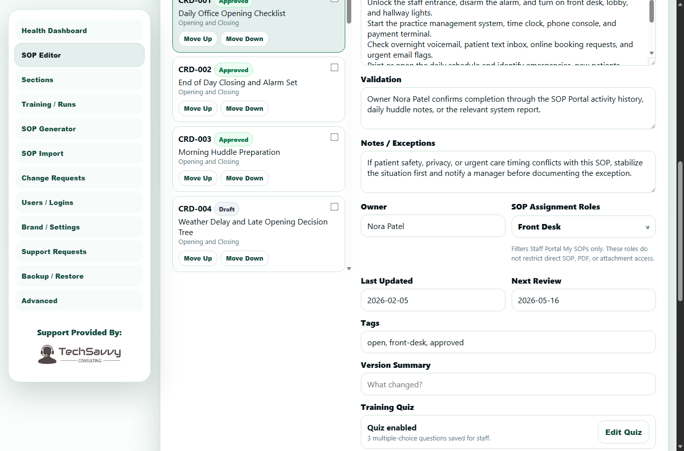
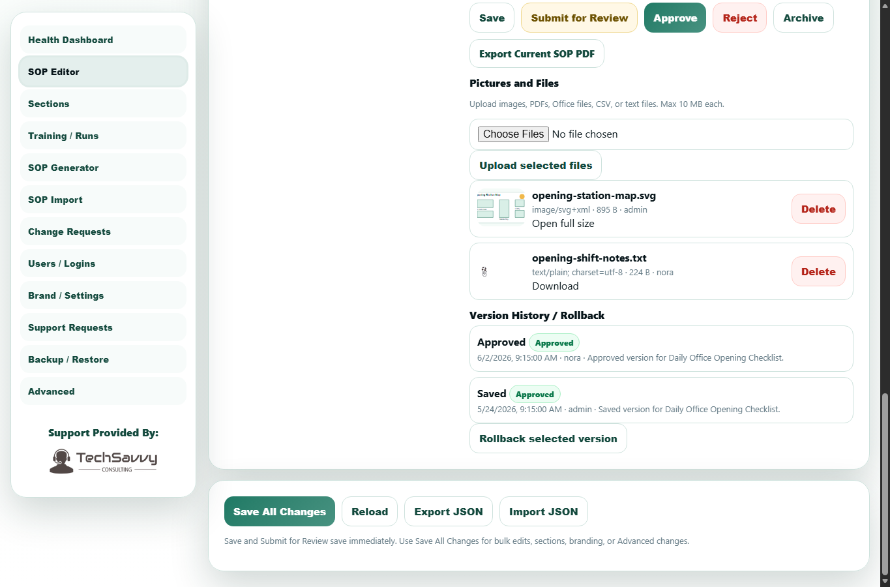
9. Duplicate and bulk-update SOPs
The SOP Editor includes faster tools for repeated admin cleanup.
- Duplicate one SOP. Select the SOP, choose Duplicate, and enter the target section ID when prompted.
- Select multiple SOPs. Use the checkboxes in the SOP list to mark the SOPs that should receive the same change.
- Use Select Visible carefully. Select Visible marks every SOP currently shown by search, section, and status filters.
- Clear accidental selections. Use Clear Selection before applying changes if the selected count is not the group you intended.
- Set bulk fields. In Bulk Actions, choose only the fields you want to change: section, status, owner, or next review date.
- Approve only complete SOPs. Bulk approval is blocked when any selected SOP is missing a title or at least one step.
- Apply the update. Select Apply to Selected SOPs. The portal saves the update and reloads live data after the bulk change.
- Recheck filters. If bulk changes move SOPs to a different section or status, they may leave the current filtered list.
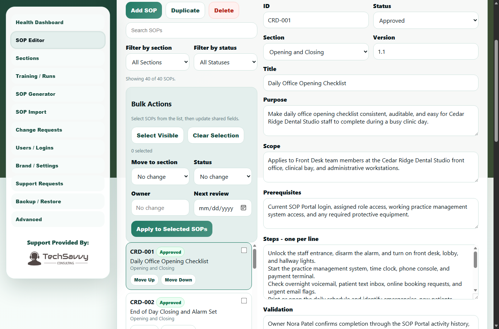
12. Generate SOP drafts
The SOP Generator builds a prompt for ChatGPT or another AI tool. The portal does not contact AI by itself.
- Open SOP Generator. Use this tab when you want the portal to build a prompt for an outside AI tool.
- Choose the generation mode. Pick one SOP, a new section with SOPs, or starter portal seed content.
- Fill in context fields. Add business type, website or notes, software stack, audience, risk level, style, and requested SOP needs.
- Build and copy the prompt. Select Build Prompt, review the generated prompt, then select Copy Prompt.
- Use the external AI tool. Paste the prompt into ChatGPT or another approved AI tool, then copy the result back into the portal.
- Clean and preview. Select Clean and Preview so the portal can parse the returned content and show what will be saved.
- Review warnings before saving. Missing fields, unclear source material, duplicate concerns, or parsing issues appear as warnings in the preview and history.
- Save intentionally. Save generated content as Draft for editing or Pending Review when it is ready for manager review.
- Review history. Use Generator History to review the date, summary, copied prompt, pasted result, warnings, and saved SOP IDs for previous generator runs.
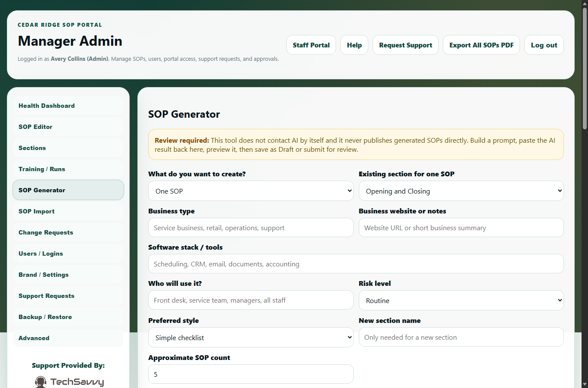
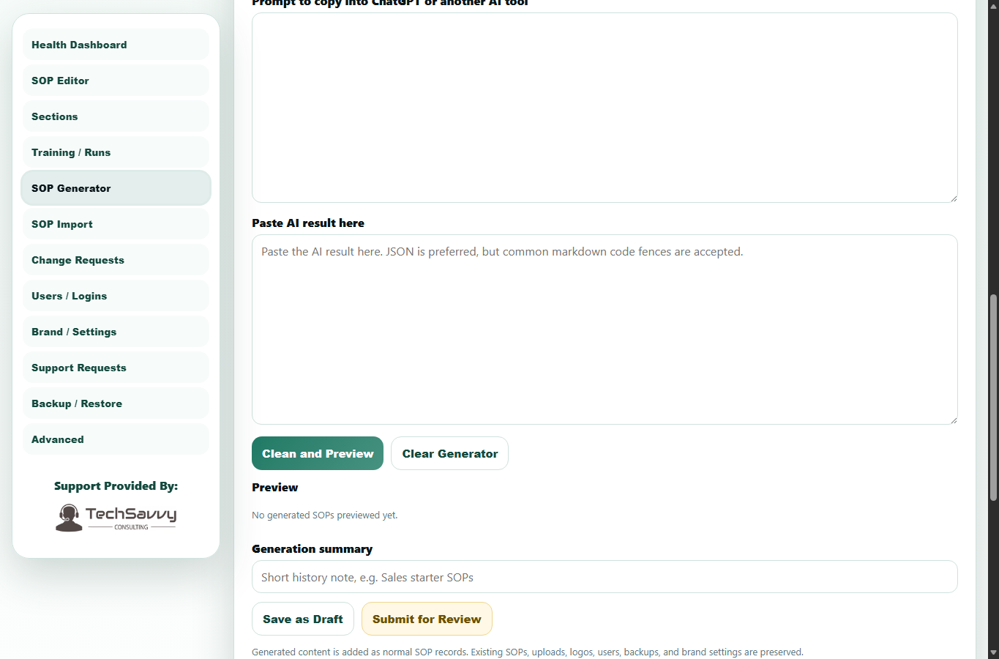
13. Import SOPs and handle duplicates
SOP Import converts existing SOP source material into portal-ready drafts using an external AI conversion step.
- Open SOP Import. Use this tab when existing SOP text needs to become portal-ready draft records.
- Choose the import behavior. Import into one existing section, or allow the import to create or reuse sections from the source material.
- Build and copy the import prompt. The prompt tells the outside AI tool what JSON format the portal expects.
- Convert externally. Use ChatGPT or another approved AI tool to convert the source material to the requested JSON format.
- Paste and preview. Paste the returned JSON into the portal and select Clean and Preview.
- Resolve duplicates. If a duplicate title is detected, choose Add new copy, Skip, or Update existing as draft.
- Save the import. Save as Draft for editing or submit for review when the content is ready for manager review.
- Review import history. Use Import History to review the date, summary, copied import prompt, pasted conversion result, duplicate choices, warnings, and saved SOP IDs for previous imports.
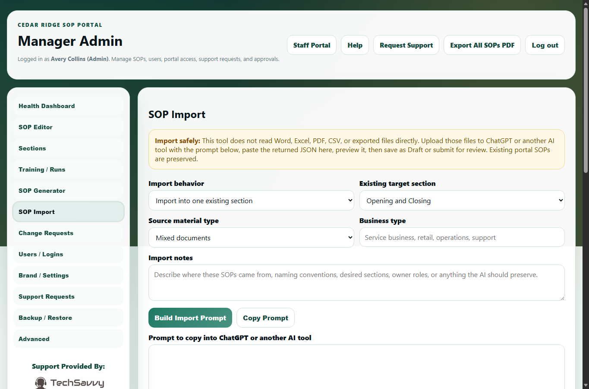
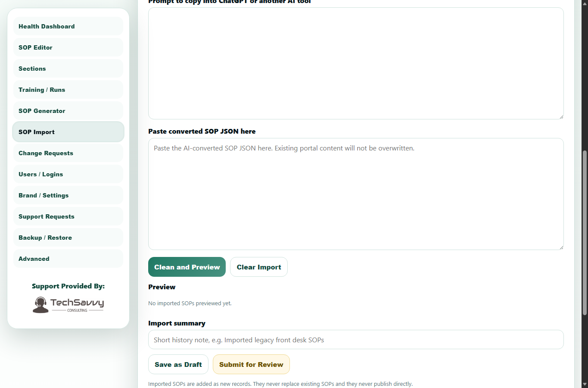
19. Back up, restore, and export the portal
The Backup & Restore Center is Admin-only and is the recovery hub for this local-folder hosted portal.
- Open Backup / Restore. This Admin-only tab manages backups, restore actions, retention cleanup, and full portal export packages.
- Review backup status. Check backup counts, total backup size, and the backup history list before deleting or restoring anything.
- Create a complete backup set. Use Complete Backup before resetting a portal, moving data into a blank template, or doing major setup work. This creates matched backup files and a manifest for every restore data area.
- Download a portal ZIP when files are needed. Use Download Portal ZIP to export a portable package containing data, public files, tools, docs, config, server, and start script.
- Choose whether to include attachments. Leave Include SOP attachments off for smaller exports, or turn it on when uploaded SOP files need to travel with the ZIP.
- Choose a restore target. Restore targets include SOPs, Users, Portal Settings, Brand Color Settings, Support Requests, Change Requests, Generator History, SOP Assignment Roles, Favorites, Checklist Runs, Training Results, Config, or Everything.
- Use full-set restore carefully. Use Everything, latest matching backup set to restore the newest complete backup manifest, especially after using Complete Backup. This avoids mixing unrelated backup times.
- Match backup file to target. Select the matching backup file when restoring one data type. The portal blocks the wrong backup type from being restored into the wrong target.
- Confirm restore. Select Restore Selected, then type RESTORE to confirm. The portal validates the selected backup files, creates safety backups, and rolls back when possible if restore fails before completion.
- Restart after config restore. If Config is restored, restart the portal so the running server matches the restored listener and runtime settings.
- Apply retention. Use Apply 25-Backup Retention, Apply 50-Backup Retention, or Apply 100-Backup Retention to keep the newest backups overall while preserving the newest backup for each file type when possible.
- Clear backup files only when intended. Delete All Backup Files asks you to type CLEAR before removing backup files from the interface and backup folder.
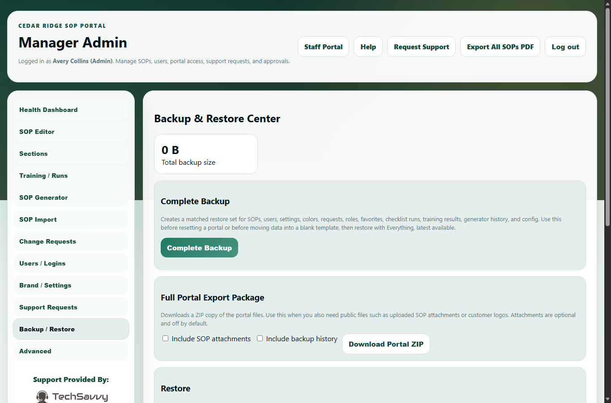
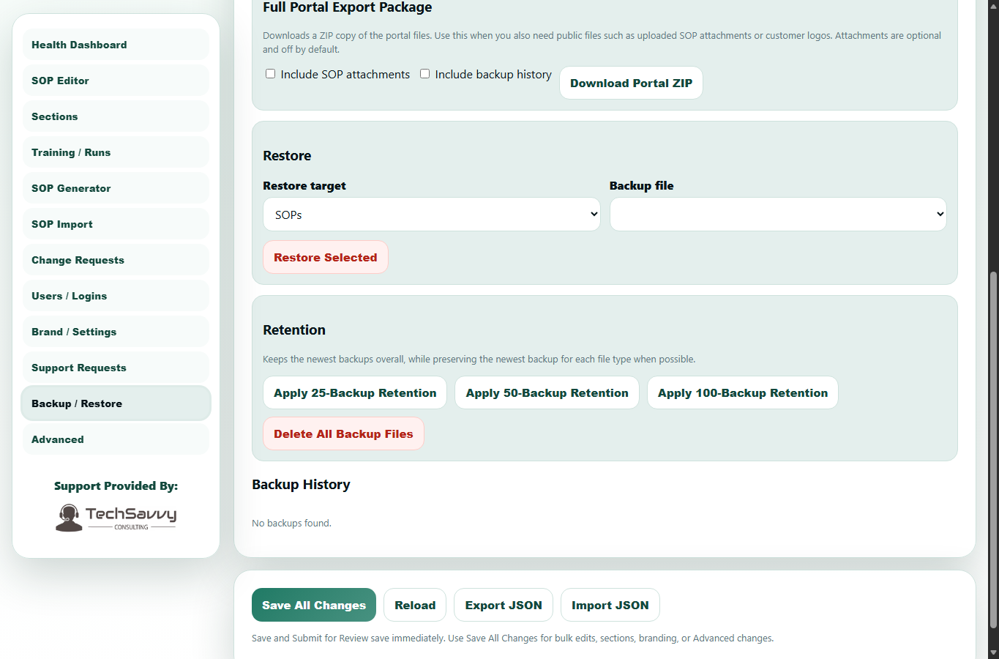
17. Manage SOP assignment roles
SOP assignment roles now live inside Users / Logins. They filter My SOPs only. Permissions stay fixed as Admin, Manager, Editor, Staff, and Viewer.
- Open Users / Logins. SOP assignment roles are managed from the same area as user accounts.
- Find SOP Assignment Roles. Scroll below the user list to the role list editor.
- Enter one role per line. Each line becomes an official assignment role option in SOP Editor and Users / Logins.
- Use generic job or workflow names. Examples include All Staff, Front Desk, Operations, Service Team, Sales, Trainer, Billing, or Leadership.
- Save the list. Select Save SOP Assignment Roles, or use the bottom Save All Changes button if you are saving several admin edits together.
- Assign roles to users. Select a user, choose that user's SOP assignment roles, then select Update User.
- Assign roles to SOPs. Return to SOP Editor and select which official roles should see each SOP under My SOPs.
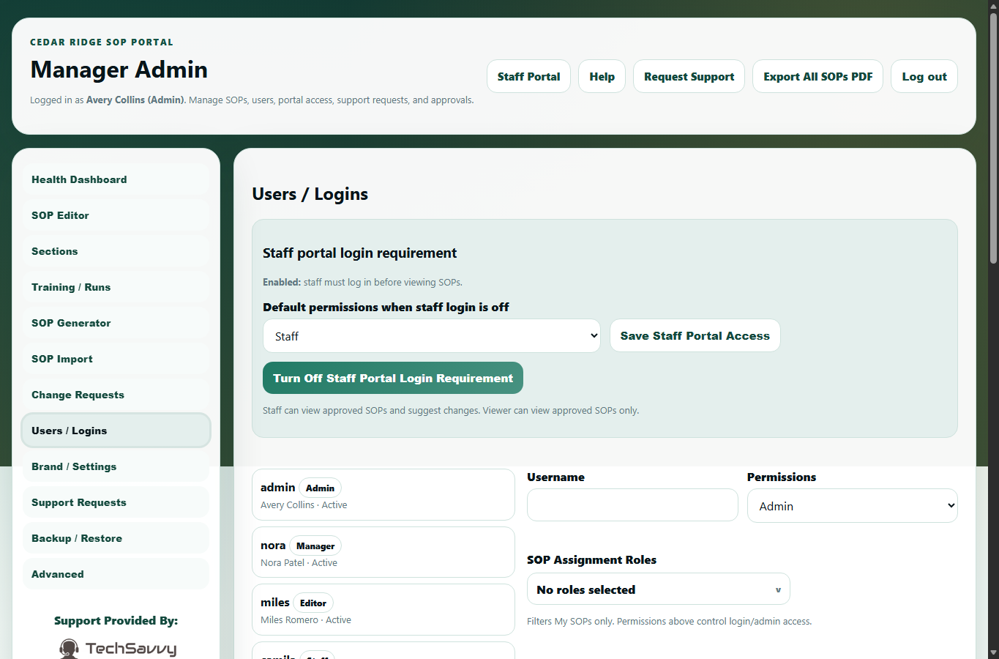
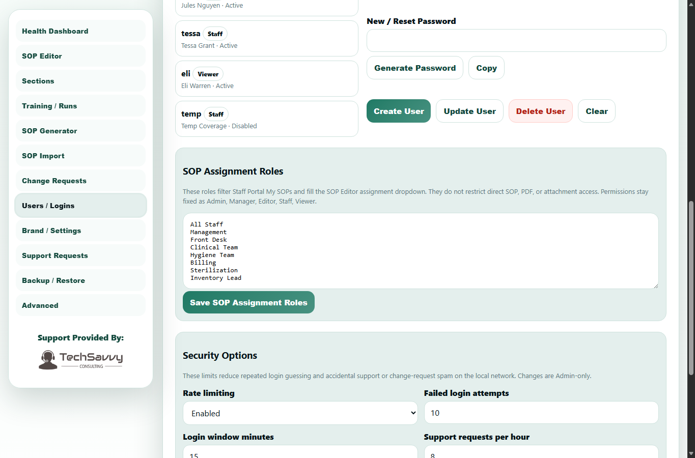
11. Review training and checklist runs
The Training / Runs tab is available to Admin Portal roles. It uses existing SOP data to build training questions, previews the checklist that staff will run from SOP steps, and reports checklist runs, read confirmations, and quiz results.
- Open Training / Runs. Use this tab to build quiz questions and review staff completion records.
- Select the SOP. Choose the SOP you want to train from in the Build training for SOP dropdown.
- Review the source fields. Check owner, assignment role, prerequisites, validation, and checklist preview before generating questions.
- Build from SOP Fields. Use this button to create multiple-choice questions from owner, section, assignment role, first step, and validation.
- Build from Steps. Use this button to create step-order questions from the selected SOP steps.
- Edit each question. Adjust wording, correct answer, and multiple-choice options so the quiz matches the actual SOP.
- Add custom questions. Use Add Question when generated questions do not cover an important point.
- Save the quiz. Select Save Quiz to SOP so staff can take the quiz from the SOP quick actions.
- Confirm quiz status. Return to SOP Editor to confirm the selected SOP now shows Quiz enabled and the saved question count.
- Review completions. Use the reports on the right to review recent checklist runs, read confirmations, and quiz results for the selected SOP.
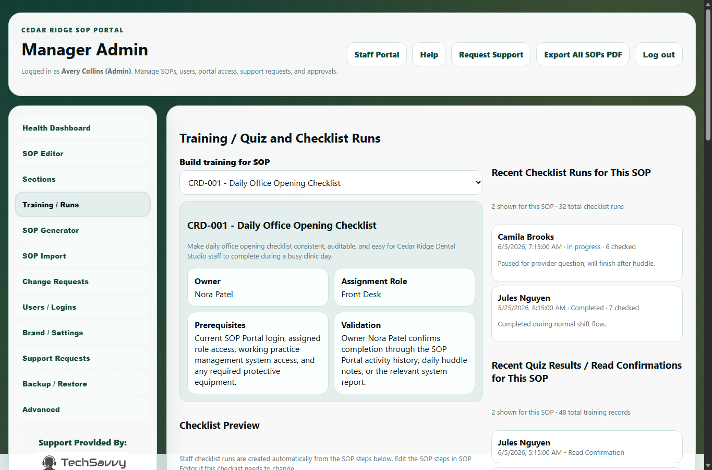
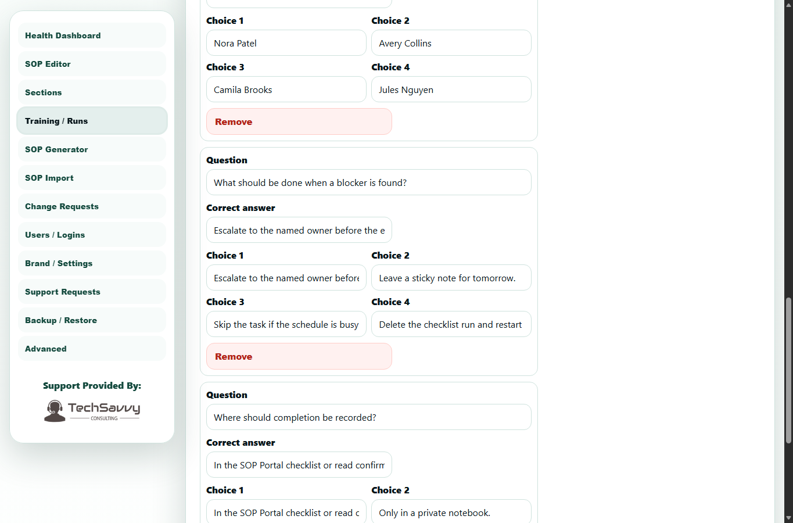
10. Manage sections
Sections control the staff portal sidebar and help users browse SOPs by workflow area. Section editing is available to Managers and Admins.
- Open Sections. Use this tab to manage the workflow groups shown in the staff portal sidebar.
- Select a section. Click a section from the list so its fields load on the right.
- Edit Section ID carefully. Section ID is the internal link between SOPs and the section. Changing it can affect SOP placement.
- Edit Icon, Title, and Description. Title is what staff see in the sidebar. Description explains the section's purpose for admins.
- Move SOPs before deleting. Do not delete a section until SOPs inside it are moved or deleted.
- Save the update. Select Save All Changes after section updates.
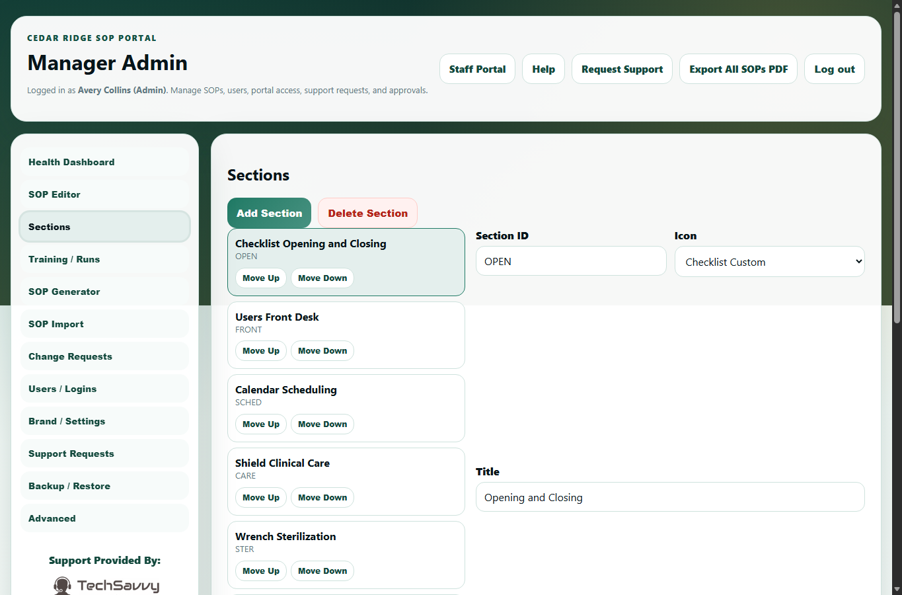
14. Review change requests
Change Requests show staff feedback and requested SOP updates.
- Open Change Requests. Use this tab to review staff-submitted SOP feedback.
- Filter the list. Choose All, Open, Approved, Rejected, or Completed to focus the request list.
- Select a request. Click a request to show the full issue, suggested change, status, urgency, requester, and created date.
- Review the details. Read the issue, suggested change, created date, and any manager note before changing status.
- Add a manager note. Use the note field to document the decision, next step, or reason for rejection.
- Open the SOP when needed. Use Open SOP if content needs editing in SOP Editor.
- Complete only after handling. Complete changes the request status only; it does not edit SOP content.
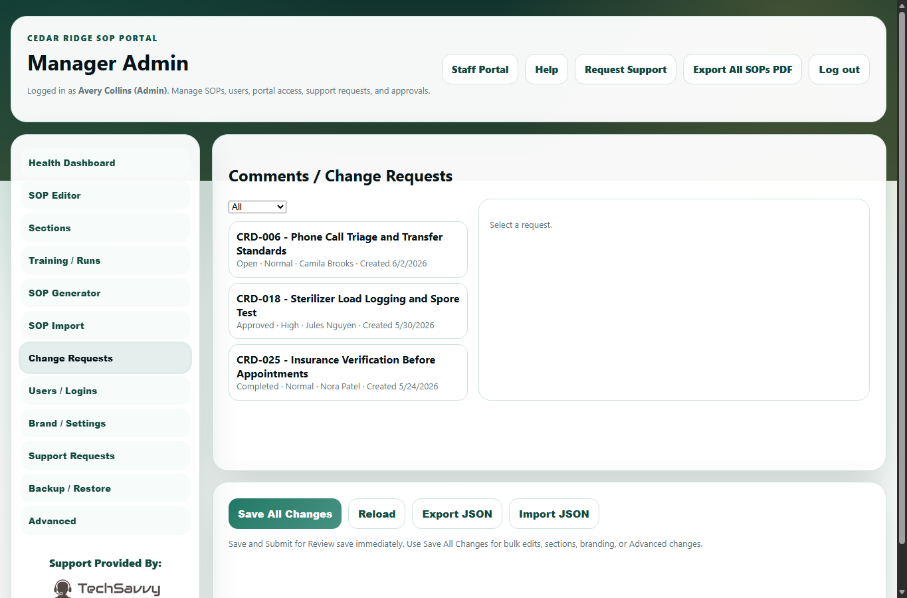
15. Review portal support requests
Support Requests show portal support form submissions saved locally for Admin review.
- Open Support Requests. Use this tab to see requests submitted through the portal support form.
- Select a request. Click a request in the left list to open the details on the right.
- Review contact details. Check requester, username, email, phone, urgency, page, and message.
- Follow up outside the portal. Use the contact information to respond through the appropriate support process.
- Clear old requests carefully. Select Clear only when all locally saved portal support requests should be removed from the interface.
- Confirm before clearing. The portal asks for confirmation before deleting the local list and creates a backup first.
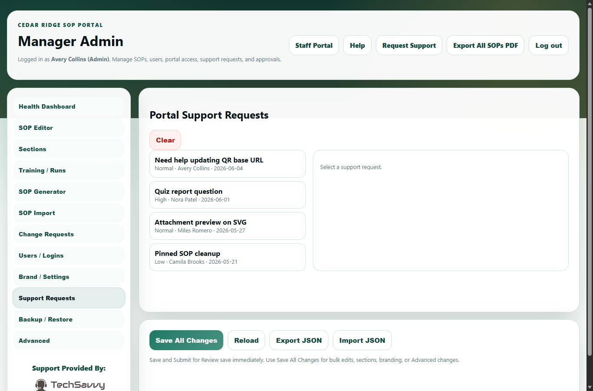
16. Manage users, passwords, and security
The Users / Logins tab is Admin-only. It controls user accounts, staff login, and local security options.
- Set staff login behavior. Use the staff login toggle to require or remove staff login for the staff portal.
- Choose no-login access. When staff login is off, choose the default no-login permissions used by public staff portal visitors, then select Save Staff Portal Access.
- Review security options. Use security settings to limit login attempts and support/change request volume, then select Save Security Options.
- Select a user. Click a user to update display name, permissions, SOP assignment roles, active status, or password.
- Generate or copy a password when needed. Use Generate Password to create a temporary password and Copy to place it on the clipboard, then share it securely outside the portal.
- Create new users carefully. Choose permissions for portal access and SOP assignment roles for My SOPs filtering.
- Save user changes with Update User. The bottom Save All Changes button saves portal/SOP changes, not the selected user form.
- Admin: full portal control.
- Manager: SOP management, sections, uploads, approvals, archived status, rollback, and change request review.
- Editor: draft, edit, duplicate, upload through draft workflow, and submit for review.
- Staff: approved SOPs, downloads, checklist runs, training, favorites, and change suggestions.
- Viewer: approved SOP access, read confirmations, checklist runs, and quizzes. Viewers cannot submit change requests.
18. Update brand and portal settings
Brand / Settings is Admin-only. Use it to customize the portal for the customer or business.
- Update Portal Name. This rebrands portal titles, the staff portal header label, the admin header, the login label, the help header, browser tabs, and support request subject defaults.
- Update Company Name. This feeds customer-only references, such as the default staff portal headline when no custom headline is entered.
- Update Staff Portal Header Headline. This controls the large descriptive text on the staff portal home area.
- Edit Staff Portal Rules. Enter one rule per line. Blank lines are ignored, and leaving the field empty hides the Staff rules box.
- Set the portal port. Change the local port number when creating a customer copy or avoiding a port conflict.
- Set Mobile / QR Base URL. Use the local network address phones can open, such as http://192.168.1.25:8086. QR codes and copied SOP links use this value when it is set.
- Choose brand colors. Set Primary, Accent, Dark, Light Background, and Active Section Highlight Color, then use color recovery buttons when needed.
- Use color recovery. Revert to Last Color Scheme, Restore Default Colors, and Save Current Colors as Default update the saved color set immediately.
- Set defaults. Choose the default SOP owner from the active Users / Logins list, then set the review cadence.
- Upload or reset the logo. Use a landscape logo when possible. The staff portal fits the logo inside the sidebar area without cropping.
- Recapture Help Screenshots. Use this after rebranding or major SOP setup so Help images match the current logo, colors, titles, sections, SOP examples, and admin fields.
- Save the settings. Select Save All Changes. If the port changed, restart the portal so the server listens on the new port.
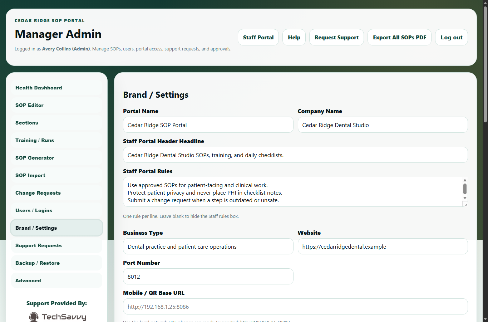
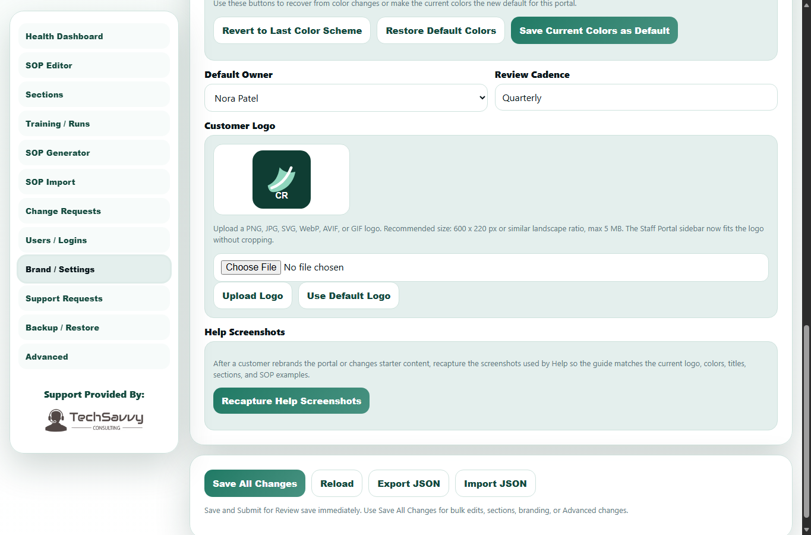
20. Use Advanced checks carefully
Advanced is Admin-only. It includes the JSON editor, smoke test, and start-over tools for controlled setup or recovery work.
- Use normal tabs first. Routine changes should be done in SOP Editor, Sections, Users / Logins, Brand / Settings, or Backup / Restore.
- Export before edits. Create a Complete Backup or export JSON before manual JSON repair.
- Edit JSON only for controlled repair. Use the Advanced JSON editor only for directed technical work or carefully reviewed data correction.
- Run Smoke Test. Run Smoke Test after major changes, imports, restores, or manual JSON edits.
- Review PASS/FAIL lines. Check config, data, admin access, attachment protection, broken section assignments, missing attachments, and unresolved SOP references.
- Clear sections only for start-over setup. Use Remove All Sections and SOPs only when a customer wants a clean SOP library. The portal creates a full backup and rollback snapshot first, then requires typing CLEAR.
- Choose whether to clear staff data. Turn on Also clear staff custom data only when pinned SOPs, checklist runs, training results, generator history, and change requests should be cleared too.
- Restore snapshots carefully. Select an item in All SOPs Version History / Rollback, then use Restore Snapshot to replace the current sections and SOPs with that snapshot.
- Create snapshots when needed. All SOPs Version History / Rollback can create a whole-portal SOP snapshot before major setup or repair work.
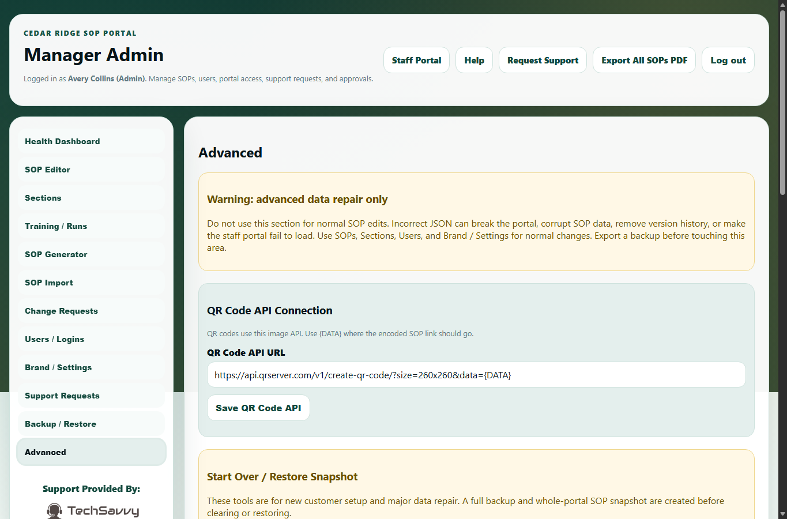
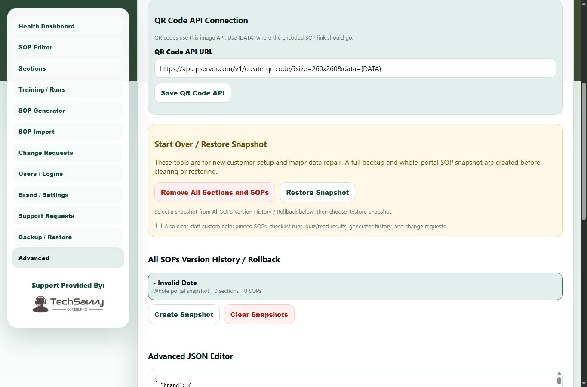
21. About this software
This SOP Portal was developed for practical, day-to-day operating procedure management: searchable staff SOPs, admin-controlled approvals, checklists, training records, change requests, local backups, and customer-specific branding in one local portal.